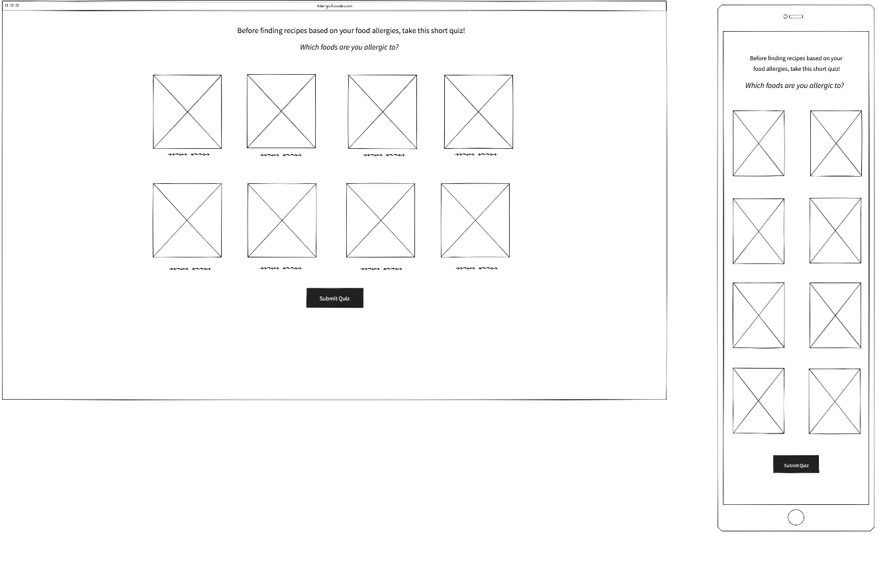
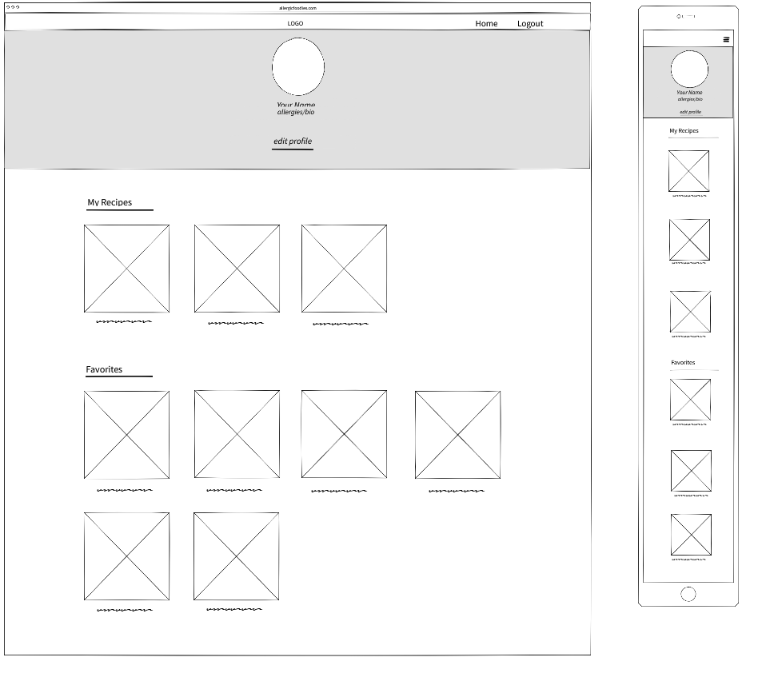

In this wireframe, there will be a one question quiz asking the user what their allergy/allergies are. It is a simple page used to filter what recipes will be recommended for them. There will be images of each of the top 8 food allergens. After the quiz you will be taken to the sign-up page The mobile will look the same.
In the account page you will get to set a profile picture, edit your name, and allergies. You can also edit your profile. below your profile you will see a row of your own recipes that you have posted. Under your own recipes, you will have a list of your recent favorites recipes. You can click on your favorites and it will take you to a favorites page where you can navigate each category.
